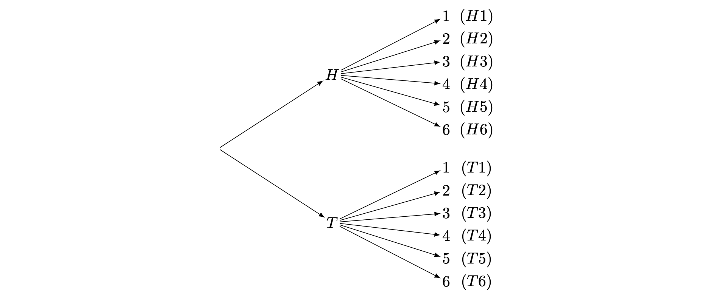
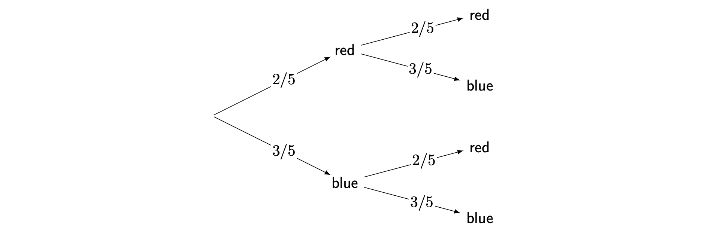
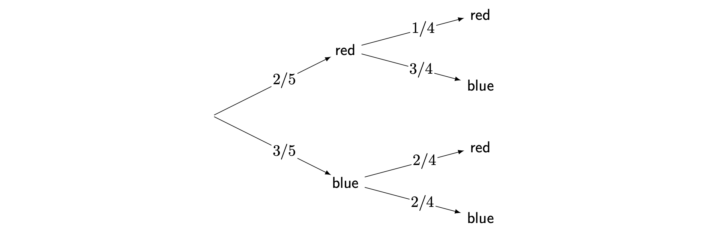

Introduction to probability
| Narration of study guide: |
What is probability?
Uncertain situations are everywhere: from rolling a dice and flipping a coin, to weather forecasting and financial markets. How exactly can you approach decision making in the face of uncertainty? For example, should you bring an umbrella tomorrow? Or, should you invest in a certain stock?
When you are facing these situations, you could turn to probability theory to predict the likelihood of certain outcomes, especially when you have to make important decisions. Probability theory is not only foundational to the study of statistics, but also has uses in pure mathematics, quantum mechanics, economics, biology, and even in manufacturing.
This guide introduces you to probability theory. First, the concept of sample space will be explained. Next, the complement rule will be demonstrated, and a distinction will be made between theoretical probability and experimental probability. Then you will learn about independent and dependent events.
Sample space
When thinking about probability of something happening, it is important to consider what all the possible outcomes are in that situation. The collection of all possible outcomes is known as the sample space.
An outcome is a single result of an experiment or situation. An event is some collection of outcomes. The sample space is the set of all possible outcomes.
Mathematically speaking, an outcome is an element of the sample space, and an event is a subset of the sample space.
Mathematically speaking, an outcome is an element of the sample space, and an event is a subset of the sample space.
The sample space can be represented in various different ways, but one common example is to represent them as a list of outcomes.
Try to flip a coin using the interactive app below.
There are two possible outcomes when you flip a coin: heads (H) or tails (T). Therefore, the sample space of flipping a coin once can be represented as \(\{H, T\}\).
#| '!! shinylive warning !!': |
#| shinylive does not work in self-contained HTML documents.
#| Please set `embed-resources: false` in your metadata.
#| standalone: true
#| viewerHeight: 340
library(shiny)
library(bslib)
# Hard-coded hex color for the button (a nice teal color)
BUTTON_COLOR <- "#3F6BB6"
ui <- page_fluid(
title = "Coin flipper",
card(
card_header("Coin flipper"),
card_body(
# Use a row layout for landscape orientation
layout_columns(
col_widths = c(4, 4, 4), # Equal width columns
# Left column: Description
card(
card_body(
div(
style = "display: flex; height: 100%; align-items: center; justify-content: center;",
p("Click the button to flip a coin.", style = "font-size: 18px;")
)
)
),
# Middle column: Coin display
card(
card_body(
div(
style = "text-align: center;",
div(
style = "font-size: 40px; line-height: 1.2; width: 150px; height: 150px;
margin: 0 auto; border: 2px solid #ccc; border-radius: 50%;
display: flex; align-items: center; justify-content: center;
background-color: #f0f0f0;",
textOutput("coinResult")
)
)
)
),
# Right column: Button
card(
card_body(
div(
style = "display: flex; height: 100%; align-items: center; justify-content: center;",
actionButton("flipButton", "Flip Coin", class = "btn-lg",
style = paste0("background-color: ", BUTTON_COLOR, "; color: white;"))
)
)
)
)
)
)
)
server <- function(input, output, session) {
# Create a reactive value to store the current coin side
coinResult <- reactiveVal(sample(c("HEADS", "TAILS"), 1))
# Update the coin result when the flip button is clicked
observeEvent(input$flipButton, {
# Flipping animation - this is a simplified version using invalidateLater
# to simulate the coin flipping
for(i in 1:5) {
invalidateLater(i * 100)
}
# Final result
coinResult(sample(c("HEADS", "TAILS"), 1))
})
# Display the current coin result
output$coinResult <- renderText({
coinResult()
})
}
# Run the application
shinyApp(ui = ui, server = server)Try rolling a standard six-sided die using the app below!
There are six possible outcomes when you roll a standard six-sided die: \(1, 2, 3, 4, 5,\) and \(6\). Therefore, the sample space of rolling a standard six-sided die can be represented as \(\{1, 2, 3, 4, 5, 6\}\). Here, an event could be something like ‘an even number is rolled’, which is represented by \(\{2,4,6\}\).
#| '!! shinylive warning !!': |
#| shinylive does not work in self-contained HTML documents.
#| Please set `embed-resources: false` in your metadata.
#| standalone: true
#| viewerHeight: 300
library(shiny)
library(bslib)
# Hard-coded hex color for the button (a nice teal color)
BUTTON_COLOR <- "#3F6BB6"
ui <- page_fluid(
title = "Six-sided die roller",
card(
card_header("Six-sided die roller"),
card_body(
# Use a row layout for landscape orientation
layout_columns(
col_widths = c(4, 4, 4), # Equal width columns
# Left column: Description
card(
card_body(
div(
style = "display: flex; height: 100%; align-items: center; justify-content: center;",
p("Click the button to roll a 6-sided die.", style = "font-size: 18px;")
)
)
),
# Middle column: Dice display
card(
card_body(
div(
style = "text-align: center;",
div(
style = "font-size: 120px; line-height: 1.2; width: 150px; height: 150px;
margin: 0 auto; border: 2px solid #ccc; border-radius: 15px;
display: flex; align-items: center; justify-content: center;",
textOutput("diceValue")
)
)
)
),
# Right column: Button
card(
card_body(
div(
style = "display: flex; height: 100%; align-items: center; justify-content: center;",
actionButton("rollButton", "Roll Dice", class = "btn-lg",
style = paste0("background-color: ", BUTTON_COLOR, "; color: white;"))
)
)
)
)
)
)
)
server <- function(input, output, session) {
# Create a reactive value to store the current roll
diceValue <- reactiveVal(sample(1:6, 1))
# Update the dice value when the roll button is clicked
observeEvent(input$rollButton, {
# Rolling animation - this is a simplified version using invalidateLater
# to simulate the dice rolling
for(i in 1:5) {
invalidateLater(i * 100)
}
# Final roll
diceValue(sample(1:6, 1))
})
# Display the current dice value
output$diceValue <- renderText({
diceValue()
})
}
# Run the application
shinyApp(ui = ui, server = server)But what if the coin was flipped, then the die was rolled? When you are representing the sample space of all possible outcomes of two processes, it would be helpful to use a table. When you are representing the sample space of two or more processes, it could also be helpful to use a tree diagram.
You flip a coin and roll a die. When you flip a coin, the outcome can either be heads or tails. When you flip a die, the possible outcomes are 1, 2, 3, 4, 5, 6. Combining these together, there are 12 total possible outcomes. When representing this as a list, you could write this as \(\{H1, H2, H3, H4, H5, H6, T1, T2, T3, T4, T5, T6\}\).
Since you are working with two events, you could also represent this as a table:
| 1 | 2 | 3 | 4 | 5 | 6 | |
|---|---|---|---|---|---|---|
| H | H1 | H2 | H3 | H4 | H5 | H6 |
| T | T1 | T2 | T3 | T4 | T5 | T6 |
Alternatively, you could represent it as a tree diagram, which is especially useful if you are working with two or more events:

Notice that since the coin flipping occurred first, the tree diagram begins with this event. It then branches out to the possible outcomes for when the die is rolled.
Probability and the complement rule
Probability refers to the likelihood of a event happening relative to the sample space it is in.
To represent the probability of events over the sample space, it would be helpful to use the notation \(\mathbb{P}\).
The probability of event \(A\) occurring can be written as \(\mathbb{P}(A)\).
The probability of event \(A\) not occurring can be written as \(\mathbb{P}(A')\).
You will see this notation used below.
There are three common ways of representing probability:
As a fraction, such as \(\frac{1}{2},\frac{1}{5},\frac{3}{4}\)
As a decimal, such as 0.5, 0.2, 0.75
As a percentage, such as 50%, 20%, 75%
All three will be used throughout the guide.
Here are two important facts about probability:
Probability always has to be a number in between \(0\) and \(1\). When the probability is \(0\), there is no possibility of the event happening, and when the probability is \(1\), the event will definitely happen. Therefore, probability cannot be less than \(0\), and it cannot be more than \(1\).
More formally, if \(A\) is an event contained in a sample space \(S\), then: \[0 \leq \mathbb{P}(A) \leq 1.\]
The probabilities of all outcomes in an event always add up to \(1\).
This can be expressed more formally as: \[\sum_{x\in S}P(x)=1\]
For example, when flipping a coin, the probability of getting heads is \(\frac{1}{2}\) (a number between \(0\) and \(1\)), and the probability of getting tails is \(\frac{1}{2}\). You can add these up together to get: \[\frac{1}{2}+\frac{1}{2}=1\]
Notice that, in this case, the probability of ‘heads’ is equal to the probability of ‘tails’ not occurring, and the probability of ‘tails’ is equal to the probability of ‘heads’ not occurring. Therefore, ‘heads’ and ‘tails’ can be called complementary events. You could then, for example, subtract the probability of ‘heads’ from 1 to get the probability of ‘tails’. \[\mathbb{P}(\textsf{tails})=1-\mathbb{P}(\textsf{tails'})=1-\mathbb{P}(\textsf{heads})=1-\frac{1}{2}=\frac{1}{2}\] This is known as the complement rule.
Theoretical probability and experimental probability
There are two main types of probability: theoretical probability and experimental probability.
Theoretical probability is probability based on what you expect to happen.
Here is how you can find theoretical probability:
\[\mathbb{P}(\textsf{event})=\frac{\textsf{number of desired outcomes}}{\textsf{total number of possible outcomes}}\]
Remember from Example 2 that there are six possible outcomes when you roll a standard fair six-sided die; \(\{1, 2, 3, 4, 5, 6\}\). It’s important to say here that each of the outcomes are equally likely - you have no more probability to roll a six than you do any other number.
So, what is the probability of the event where you roll a \(6\)? Here, there is one desired outcome - a \(6\). The total number of possible outcomes is \(6\). Therefore, the probability of rolling a \(6\) is: \[\mathbb{P}(\textsf{roll a 6}) = \frac{1}{6}.\]
So, what is the probability of the event where you roll an odd number? Here, there is three desired outcomes - \(1\), \(3\) and \(5\). The total number of possible outcomes is still \(6\). Therefore, the probability of rolling an odd number is: \[\mathbb{P}(\textsf{roll an odd number}) = \frac{3}{6} = \frac{1}{2}.\]
Finally, what is the probability of not rolling a \(6\)? You could work this out using the complement rule. The probability of not rolling a \(6\) is the same as \(1\) minus the probability of rolling a \(6\). Therefore, the probability of not rolling a \(6\) is: \[\mathbb{P}(\textsf{(roll a 6)}') = 1 - \mathbb{P}(\textsf{roll a 6}) = 1- \frac{1}{6} = \frac{5}{6}.\] This is the power of the complement rule!
Experimental probability is probability based on what actually happens.
Here is how you can find experimental probability:
\[ \mathbb{P}(\textsf{event})=\frac{\textsf{number of times that a desired event occurs}}{\textsf{total number of trials in an experiment}} \]
Suppose you flip a coin 1000 times. The probability of ‘tails’ may initially be higher or lower than 0.5. However, the more flips you do, the more the probability of ‘tails’ will tend to 0.5. This is an example of the law of large numbers: the more trials you do, the closer your experimental probability will get to the theoretical probability.
You can try this for yourself in the following interactive app:
#| '!! shinylive warning !!': |
#| shinylive does not work in self-contained HTML documents.
#| Please set `embed-resources: false` in your metadata.
#| standalone: true
#| viewerHeight: 360
library(shiny)
library(bslib)
# Hard-coded hex color for the button (blue color requested)
BUTTON_COLOR <- "#3F6BB6"
ui <- page_fluid(
title = "Coin Flipper",
card(
card_header("Coin Flipper"),
card_body(
# Use a row layout for landscape orientation
layout_columns(
col_widths = c(4, 4, 4), # Equal width columns
# Left column: Description and stats
card(
card_body(
div(
style = "display: flex; flex-direction: column; height: 100%; justify-content: center;",
p("Click the button to flip a coin.", style = "font-size: 18px;"),
br(),
div(
style = "background-color: #f8f9fa; padding: 15px; border-radius: 5px;",
h5("Statistics:"),
div(
style = "display: flex; justify-content: space-between;",
div("Total flips:"),
textOutput("totalFlips", inline = TRUE)
),
div(
style = "display: flex; justify-content: space-between;",
div("Heads:"),
textOutput("headsCount", inline = TRUE)
),
div(
style = "display: flex; justify-content: space-between;",
div("Tails:"),
textOutput("tailsCount", inline = TRUE)
)
)
)
)
),
# Middle column: Coin display
card(
card_body(
div(
style = "height: 100%; display: flex; align-items: center; justify-content: center;",
div(
id = "coinDisplay",
style = "font-size: 40px; line-height: 1; width: 150px; height: 150px;
margin: 0 auto; border: 2px solid #ccc; border-radius: 50%;
display: flex; align-items: center; justify-content: center;
background-color: #f0f0f0;",
textOutput("coinResult")
)
)
)
),
# Right column: Button
card(
card_body(
div(
style = "display: flex; flex-direction: column; height: 100%;
align-items: center; justify-content: center; gap: 20px;",
actionButton("flipButton", "Flip Coin", class = "btn-lg",
style = paste0("background-color: ", BUTTON_COLOR, "; color: white;")),
actionButton("resetButton", "Reset Stats", class = "btn-sm")
)
)
)
)
)
)
)
server <- function(input, output, session) {
# Create reactive values to store the current state
flips <- reactiveValues(
current = sample(c("HEADS", "TAILS"), 1),
total = 0,
heads = 0,
tails = 0,
flipping = FALSE,
timer = NULL # Track the timer
)
# Initialize the display
output$coinResult <- renderText({
if(flips$flipping) {
return("") # Show blank state during animation
} else {
return(flips$current)
}
})
# Update the statistics displays
output$totalFlips <- renderText({
flips$total
})
output$headsCount <- renderText({
paste0(flips$heads, " (", round(ifelse(flips$total > 0, flips$heads/flips$total*100, 0), 1), "%)")
})
output$tailsCount <- renderText({
paste0(flips$tails, " (", round(ifelse(flips$total > 0, flips$tails/flips$total*100, 0), 1), "%)")
})
# Handle the coin flip
observeEvent(input$flipButton, {
# Set the flipping state to true to show blank state
flips$flipping <- TRUE
# Create a separate reactive timer that will complete the flip after delay
# This fixes the delay issue in the previous version
flips$timer <- reactiveTimer(500)
# This observer will fire when the timer triggers
observeEvent(flips$timer(), {
# Determine the result
result <- sample(c("HEADS", "TAILS"), 1)
# Update the state
flips$current <- result
flips$total <- flips$total + 1
# Update the appropriate counter
if(result == "HEADS") {
flips$heads <- flips$heads + 1
} else {
flips$tails <- flips$tails + 1
}
# End the flipping state
flips$flipping <- FALSE
}, once = TRUE) # This ensures it only fires once per button click
})
# Reset button to clear statistics
observeEvent(input$resetButton, {
flips$total <- 0
flips$heads <- 0
flips$tails <- 0
})
}
# Run the application
shinyApp(ui = ui, server = server)Outcomes that vary in probability
The examples you have examined so far involve events with equally probable outcomes. For instance, you have a 50/50 chance of getting either heads or tails after flipping a coin. Similarly, it is equally likely for you to get any number between 1 and 6 after rolling a fair die: a \(\frac{1}{6}\) chance. But what if the outcomes vary in probability?
When all outcomes are equally likely, the sample space is uniform. When the outcomes vary in probability, the sample space is not uniform.
However, this property is not necessarily reflected in the sample space. For example, even if you flip a biased coin that is more likely to get ‘heads’, the sample space is still represented as \(\{H, T\}\).
The next step in analyzing non-uniform sample spaces is the use of probability mass functions or probability density functions. See Guide: PMFs, PDFs, CDFs for more.
It then becomes all the more useful to represent these outcomes with tree diagrams, since outcomes can have different probabilities.
Suppose that you have a bag containing 5 marbles in total, with 2 red marbles and 3 blue marbles. If you draw one marble from the bag, what is the probability of it being a red marble, and what is the probability of it being a blue one? This can be represented as a tree diagram:
As shown in the diagram, \(\mathbb{P}(\textsf{red})\) is \(\frac{2}{5}\), and \(\mathbb{P}(\textsf{blue})\) is \(\frac{3}{5}\).
You can also use a tree diagram to represent events with more than two outcomes. Imagine a jar containing 10 candies. It has 1 yellow candy, 4 green candies, and 5 purple candies. If you take one candy from the jar, what is the probability of each colour being taken?
Since \(\frac{4}{10}=\frac{2}{5}\) and \(\frac{5}{10}=\frac{1}{2}\), the diagram can be simplified as follows:
As shown in the diagram, \(\mathbb{P}(\textsf{yellow})\) is \(\frac{1}{10}\), \(\mathbb{P}(\textsf{green})\) is \(\frac{2}{5}\), and \(\mathbb{P}(\textsf{purple})\) is \(\frac{1}{2}\).
The complement rule also applies to non-uniform sample spaces. Consider the candy jar example. What if you knew the probability of taking a yellow or purple candy, but not the probability of taking a green candy?
To apply the complement rule, you should first find the probability of not taking the green candy. You can do this by adding together the probabilities of taking a yellow or purple candy. \[\mathbb{P}(\textsf{(green)}')=\mathbb{P}(\textsf{yellow}) + \mathbb{P}(\textsf{purple}) = \frac{1}{10}+\frac{1}{2}=\frac{1}{10}+\frac{5}{10}=\frac{6}{10}\]
The probability of taking the green candy is complementary to the probability of not taking the green candy. From this, you can calculate the mystery probability: \[\mathbb{P}(\textsf{green})=1-\mathbb{P}(\textsf{(green)}') = 1- \frac{6}{10}=\frac{4}{10}=\frac{2}{5}\]
Independent events
When you are representing the probabilities of two or more events, it can be important to consider the relationships between the events. Events can either be dependent on or independent of each other.
Two events \(A,B\) are independent if the occurrence of one event does not affect the likelihood of the other event happening.
If two events \(A\) and \(B\) are independent, then the probability of both events occurring is: \[\mathbb{P}(A\cap B) = \mathbb{P}(A)\cdot \mathbb{P}(B)\] The symbol \(\cap\) is the ‘intersection’ of \(A\) and \(B\) - here, \(\mathbb{P}(A\cap B)\) means \(\mathbb{P}(A\textsf{ and }B)\).
To illustrate this, you can return to the marble bag example in Example 6. What if two instances of drawing a marble occurred, with the following events:
Event 1: One marble is drawn, and the colour of the marble is recorded.
Event 2: After the marble from Event 1 is put back into the bag, another marble is drawn, and the colour of the marble is recorded.
These events can be outlined by a tree diagram:

No matter what the colour of the marble from part 1 is, the probabilities of each marble colour will remain the same for part 2. This is because the first marble was drawn and replaced by the same colour. Considering this, you can conclude that 1 and 2 are independent events, as the outcome of part 1 does not influence the outcome of part 2.
You can also use the tree diagram as a guide to calculating the probabilities of two particular events occurring:
Probability of drawing a red marble, then a red marble: \[\mathbb{P}(\textsf{red and red})=\left(\dfrac{2}{5}\right)\left(\dfrac{2}{5}\right)=\frac{4}{25}\] which is \(0.16\) or \(16\%\).
Probability of drawing a red marble, then a blue marble: \[\mathbb{P}(\textsf{red and blue})=\left(\frac{2}{5}\right)\left(\frac{3}{5}\right)=\frac{6}{25}\] which is \(0.24\) or \(24\%\).
Probability of drawing a blue marble, then a red marble: \[\mathbb{P}(\textsf{blue and red})=\left(\frac{3}{5}\right)\left(\frac{2}{5}\right)=\frac{6}{25}\] which is \(0.24\) or \(24\%\).
Probability of drawing a blue marble, then a blue marble: \[\mathbb{P}(\textsf{blue and blue})=\left(\frac{3}{5}\right)\left(\frac{3}{5}\right)=\frac{9}{25}\] which is \(0.36\) or \(36\%\).
As you would expect, all probabilities add up to \(1\)!
Dependent events
Two events are dependent when the occurrence of one event affects the likelihood of another event happening.
Dependent events tend to occur when an event changes the sample space by removal of an outcome.
The previous marble bag example in Example 6 can be adjusted to demonstrate dependent events. What if the two events occurred in this way instead?
Event 1: One marble is drawn, and the colour of the marble is recorded.
Event 2: The marble from Event 1 is not replaced. Another marble is drawn, and the colour of the marble is recorded.
Here, in the first event, the sample space can be written as \(\{\textsf{red},\textsf{red},\textsf{blue},\textsf{blue},\textsf{blue}\}\). In the second event, the sample space has changed, because the ball is not replaced. For instance, if a red ball is picked, then the sample space changes in the second event to \(\{\textsf{red},\textsf{blue},\textsf{blue},\textsf{blue}\}\). This is how the events would look on a tree diagram:

You can observe that in the second event the denominators of the probabilities change from \(5\) to \(4\). This is because there were initially \(5\) marbles in the bag, and one marble was drawn without replacement, leaving \(4\) marbles in the bag for Event \(2\). This is because the sample space has changed.
The numerators only change for the marble colour already drawn. If a red marble is drawn, then \(1\) red marble will be left among the \(4\) remaining marbles in the bag, so the probability of drawing a red marble in Event 2 is \(\frac{1}{4}\). On the other hand, if a blue marble is drawn, then \(2\) blue marbles will be left among the \(4\) remaining marbles in the bag, so the probability of drawing a blue marble in event \(2\) is \(\frac{2}{4}\).
Therefore, the probabilities of outcomes in event 2 are dependent on the outcome of event 1.
As with independent events, you can use the tree diagram as a guide to calculating the probabilities of two particular events occurring:
Probability of drawing a red marble, then a red marble: \[\mathbb{P}(\textsf{red then red})=\left(\frac{2}{5}\right)\left(\frac{1}{4}\right)=\frac{2}{20}=\frac{1}{10}\] which is \(0.1\) or \(10\%\).
Probability of drawing a red marble, then a blue marble: \[\mathbb{P}(\textsf{red then blue})=\left(\frac{2}{5}\right)\left(\frac{3}{4}\right)=\frac{6}{20}=\frac{3}{10}\] which is \(0.3\) or \(30\%\).
Probability of drawing a blue marble, then a red marble: \[\mathbb{P}(\textsf{blue then red})=\left(\frac{3}{5}\right)\left(\frac{2}{4}\right)=\frac{6}{20} = \frac{3}{10}\] which is \(0.3\) or \(30\%\).
Probability of drawing a blue marble, then a blue marble: \[\mathbb{P}(\textsf{blue then blue})=\left(\frac{3}{5}\right)\left(\frac{2}{4}\right)=\frac{6}{20} = \frac{3}{10}\] which is \(0.3\) or \(30\%\).
As you would expect, all probabilities add up to \(1\)!
The study of probabilities given that an event has already happened is known as conditional probability. For more about conditional probability, see Guide: Conditional probability.
Quick check problems
- Today, it can either rain or not rain. Suppose that the probability of rain is 0.7. What is the probability of no rain? (Provide your answer in decimal format.)
Answer: The probability of no rain is .
- You roll a six-sided die three times. What is the probability of getting a 6 three times? (Provide your answer as the simplest fraction.)
Answer: The probability of getting a 6 three times is .
- A researcher flips a coin 10 times, and it lands on heads 7 times. Therefore, the researcher concludes that \(\mathbb{P}(\textsf{heads})\) is \(\frac{7}{10}\). What type of probability is this?
Answer: This is an example of probability.
- You are given three statements below. Decide whether they are true or false.
The sum of the probabilities of two complementary events is 1. Answer: .
Only tables can be used to represent the sample space of two events. Answer: .
Tree diagrams can be used to represent both dependent and independent events. Answer: .
Further reading
For more questions on the subject, please go to Questions: Introduction to probability.
For more about how to represent probabilities as functions on the sample space via probability mass functions and probability density functions, please go to Guide: PMFs, PDFs, CDFs.
For more about how to work out probabilities after certain events have already occurred, please go to Guide: Conditional probability.
Version history
v1.0: initial version created 04/25 by Michelle Arnetta as part of a University of St Andrews VIP project.